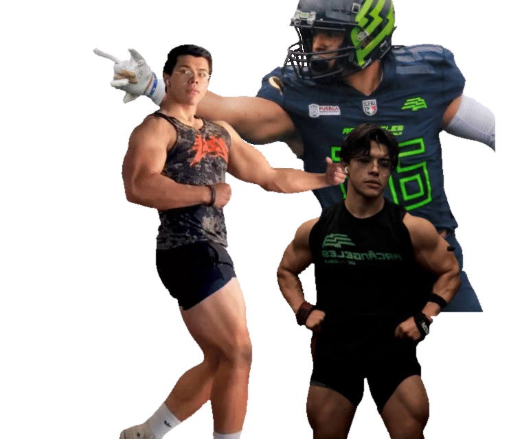

Entrena para conseguir TUS objetivos — no los que los demás quieren.
El assessment son 5 minutos y no cuesta nada. Si prefieres preguntar antes, escríbeme directo.
Entrenador Personal en Lomas de Angelópolis, Puebla. Enfocado en movilidad e hipertrofia.
PRE-SCRIPT L1 Certified CoachCertificación en programación y movimiento
Ex-Jugador Colegial D1Competencia universitaria de alto nivel
Ex-Jugador Profesional LFAArcángeles de Puebla #26
Coach de Fútbol Americano · Tec de MonterreyFormación y mentalidad de atleta de alto rendimiento
Trabajo con personas obsesionadas con mejorar su movimiento, cuerpo y fuerza. Sin plantillas genéricas. Sin atajos. Solo el proceso correcto desde la base.
Jugué futbol americano profesional y División 1. Sé lo que es exigirle al cuerpo de verdad, y lo que cuesta cuando alguien te entrena mal.
Años debajo de la barra antes de poner a alguien más debajo de una. La fuerza no se improvisa: se programa, se registra y se progresa.
Fuerza sin movilidad es una lesión esperando turno. Leo tu cuerpo en vivo, encuentro qué te frena y entreno las dos cosas.
El método funciona y yo soy el primer caso de estudio. Muévete mejor para sentirte mejor, y en el proceso te ves mejor.
Mi conocimiento no se sesga a verte bien y crecer músculo. Me enfoco en la función de tu cuerpo: que te muevas mejor, que te sientas mejor y que tu cuerpo no te ponga límites. El músculo se suma solo en el proceso. Estos son algunos de mis casos:
Llegó después de una caída de la que no pudo levantarse sola. Hoy entrena fuerza para que una caída no vuelva a decidir por ella.
Trabaja y estudia a la vez. Pasó de 2 repeticiones con 135 a 9 en 3 meses. Sin magia: programación correcta.
Fisioterapeuta, dueña de su clínica y doctora del club femenil profesional de Puebla. Entrena para rendir en la cancha cuando una jugadora la necesita, y para sentirse bien en su cuerpo.
Mamá primeriza, recién mudada a Puebla y administradora de 3 negocios. Entrena para recuperar su forma y tener la energía que sus días le exigen.
Años de dolor de rodilla y entrenadores prohibiéndole la pierna. Aquí no creemos en eso: correctivos y fortalecimiento la llevaron a 180 kg de hip thrust, 100 de RDL y desplantes con 50 kg por mano, sin dolor. Y su primera dominada en 3 meses.
The Comeup es una rutina básica de 8 a 10 semanas que, en 3 sesiones por semana, te va a guiar a través de los patrones de movimiento fundamentales — esenciales para ejecutar rutinas de resistencia de manera correcta y segura.
Cada ejercicio tiene su propósito y su progresión mientras avanzas, seleccionados para trabajar alguna función de tus músculos o estructura ósea de una manera amigable para principiantes o personas que retoman el ejercicio tras un periodo prolongado de inactividad.
Cada ejercicio cuenta con su video demostrativo y una explicación detallada de los puntos clave.
🎁 Mes de entrenamiento personalizado gratis al demostrar que terminaste la rutina*
Llena el assessment inicial. Reviso cada aplicación personalmente. Si somos compatibles, te contacto en menos de 48 horas.
LLENAR ASSESSMENT →